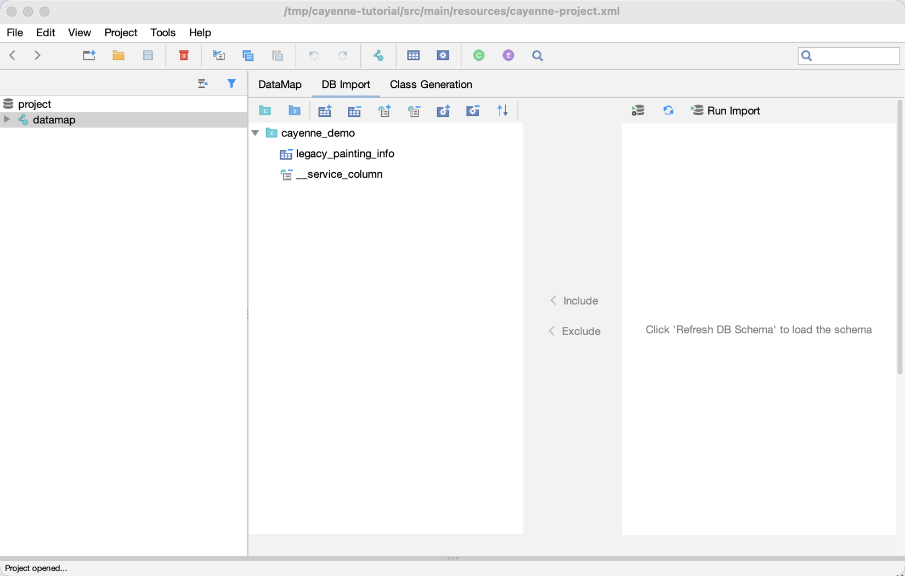
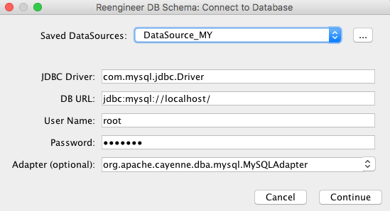

Reverse Engineering in Cayenne Modeler
Alternative approach to using build tools is doing reverse engineering from CayenneModeler.
You can find the reverse engineering tool on the DB Import tab of a DataMap.
Reverse engineering options

DB Import tab.
Here is a list of options to tune what will be processed by reverse engineering:
-
Add Catalog
-
Add Schema
-
Include Table
-
Exclude Table
-
Include Column
-
Exclude Column
-
Include Procedure
-
Exclude Procedure
More options are available after clicking Advanced Options:
-
Naming Strategy: A strategy that generates the names of ObjEntities, attributes and relationships.
-
Meaningful PK: Comma separated list of RegExp’s for tables that you want to have meaningful primary keys. By default no meaningful PKs are created.
-
Strip From Table Names: Regex that matches the part of the table name that needs to be stripped off generating ObjEntity name.
-
Table Types: Table types to import. By default these are TABLE and VIEW.
-
Skip Relationships: Whether to load relationships.
-
Skip Primary Keys: Whether to load primary keys.
-
Force DataMap Catalog: will set DbEntity catalog to one in the DataMap.
-
Force DataMap Schema: will set DbEntity schema to one in the DataMap.
-
Use Java 7 Types: Use java.util.Date for all columns with DATE/TIME/TIMESTAMP types. By default java.time. types will be used.
DataSource selection
Click Configure Connection to set a DataSource (Run Import would also ask for it, if there is none yet). You can pick one of the saved DataSources, or enter the connection settings right in the dialog.

DataSource configuration dialog.
Then click Continue. Once the connection is configured, Run Import starts the import.